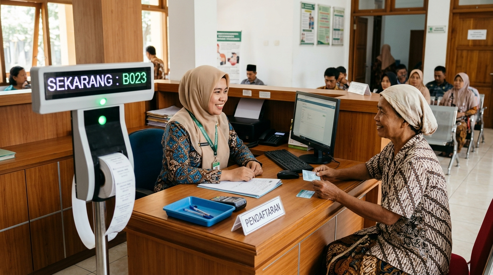
Loket DepanPendaftaran & Antrean
Pasien terdaftar cepat dengan validasi NIK/BPJS otomatis, antrean tertata rapi per poli layanan.
Puskesmas dari Aceh sampai Papua kini memakai sistem yang sama: terhubung langsung ke SATUSEHAT & BPJS, tangguh melayani tanpa sinyal, dan saling berbagi alur kerja terbaik sebagai satu komunitas besar.
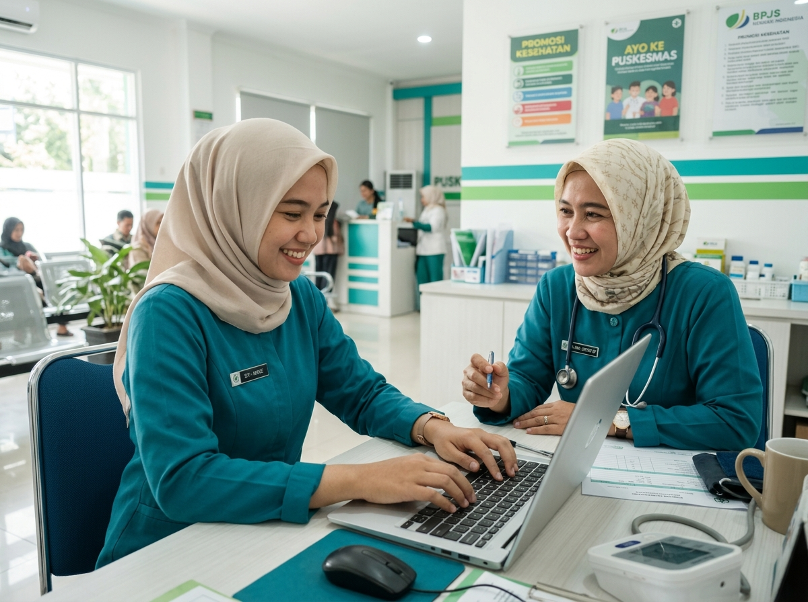
Inisiatif Komunitas & Standar Pelayanan
SIMPUS Nusantara dikembangkan bersama komunitas puskesmas dan praktisi kesehatan untuk saling memberdayakan: siap mendukung integrasi layanan primer (ILP), dashboard pemantauan wilayah untuk Dinas Kesehatan, serta bridging resmi BPJS PCare dan SATUSEHAT.
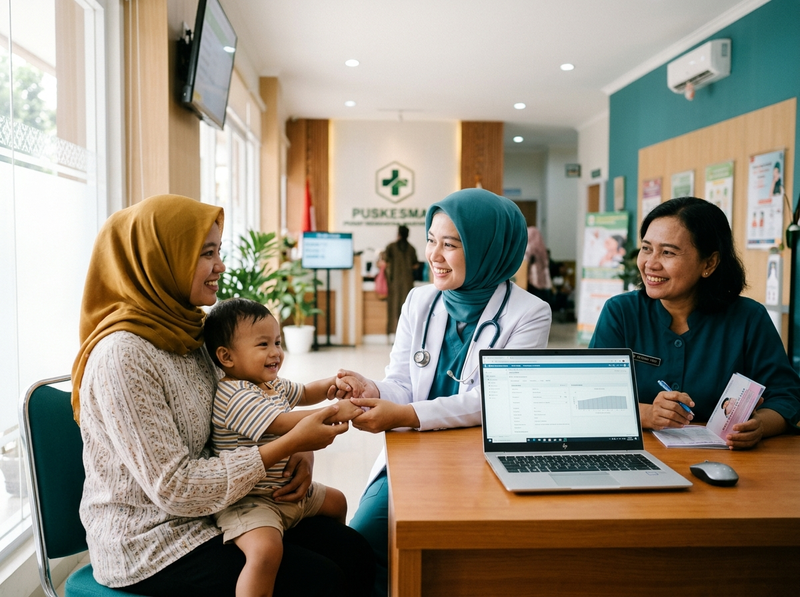
Mendukung penuh format 4 Kluster siklus hidup Kemenkes (Manajemen, Ibu & Anak, Dewasa & Lansia, serta Penanggulangan Penularan). Rekam medis terhubung antar-kluster untuk perawatan pasien yang berkesinambungan.
Dinas Kesehatan Kabupaten/Kota dapat memantau seluruh puskesmas dari satu layar: capaian Standar Pelayanan Minimal (SPM), indikator SKDR harian, dan buffer stok obat secara transparan dan terukur.
Mendukung penuh variabel data RME standar FHIR Kemenkes: Encounter, Condition (ICD-10), Observation (TTV), Procedure, dan Medication, memastikan keselarasan regulasi Permenkes No. 24/2022.
Terkoneksi langsung dengan kuota antrean Mobile JKN BPJS dan bridging PCare otomatis untuk diagnosis, tindakan, dan klaim, memudahkan tugas administratif nakes di puskesmas.
Contoh tampilan integrasi sistem dan data simulasi
Tanpa sinyal tetap jalan
Petugas tetap bisa mendaftarkan dan memeriksa pasien. Data disimpan aman di perangkat, lalu terkirim sendiri begitu sinyal kembali. Sangat andal untuk posyandu pedesaan, puskesmas di pulau kecil, pegunungan, maupun kegiatan puskesmas keliling (Pusling).
Sistem langsung beralih secara mulus saat koneksi internet terputus di tengah pemeriksaan pasien.
Begitu sinyal pulih, seluruh antrean rekam medis langsung terkirim ke SATUSEHAT & PCare BPJS tanpa perlu input ulang.
Data riwayat medis yang tersimpan di laptop/tablet nakes terlindungi rapat sesuai regulasi privasi data medis.
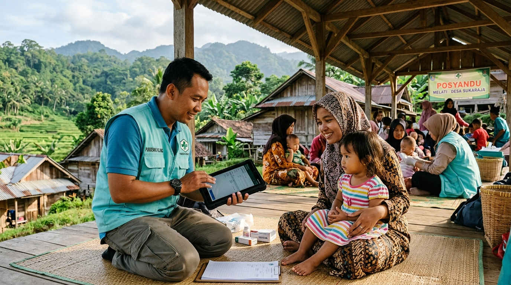
Ekosistem Layanan Terpadu
Dari loket pendaftaran hingga laporan eksekutif, setiap bagian terhubung dalam satu sistem rekam medis elektronik terintegrasi tanpa hambatan dan tanpa pengulangan ketik data.

Loket DepanPasien terdaftar cepat dengan validasi NIK/BPJS otomatis, antrean tertata rapi per poli layanan.
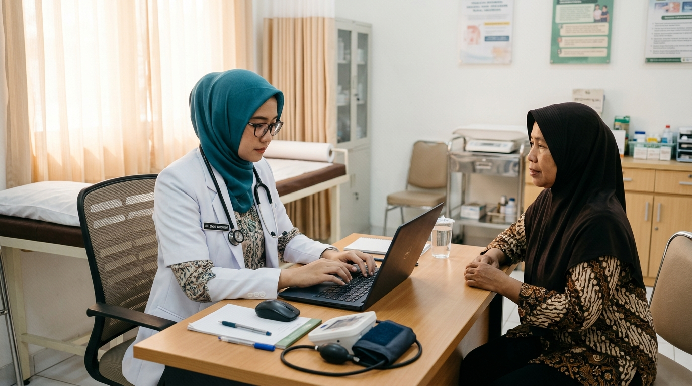
Ruang DokterRiwayat medis lengkap berstandar Kemenkes (ILP), dari skrining ibu hamil, balita, hingga lansia.
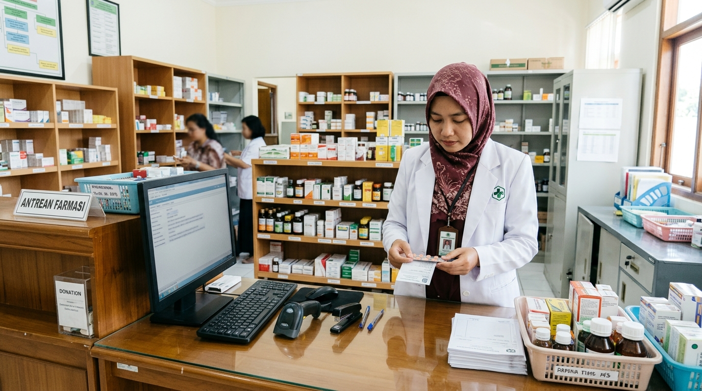
Instalasi FarmasiResep dokter langsung diterima apotek, kartu stok obat berkurang otomatis tanpa selisih.
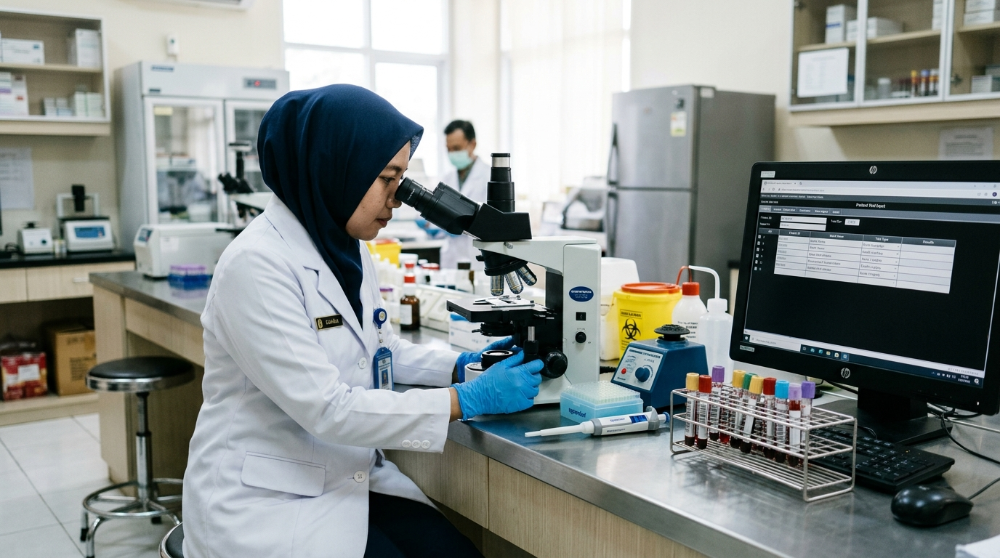
Unit LaboratoriumHasil uji lab terhubung langsung ke lembar periksa dokter secara real-time tanpa berkas fisik.
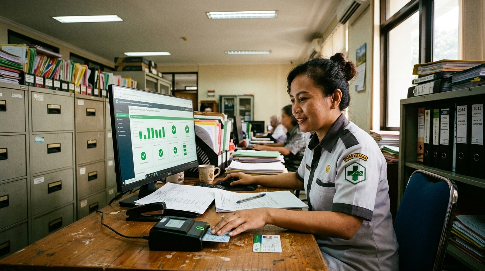
InteroperabilitasKlaim PCare dan data FHIR Kemenkes terkirim otomatis, petugas bebas dari beban ketik ganda.
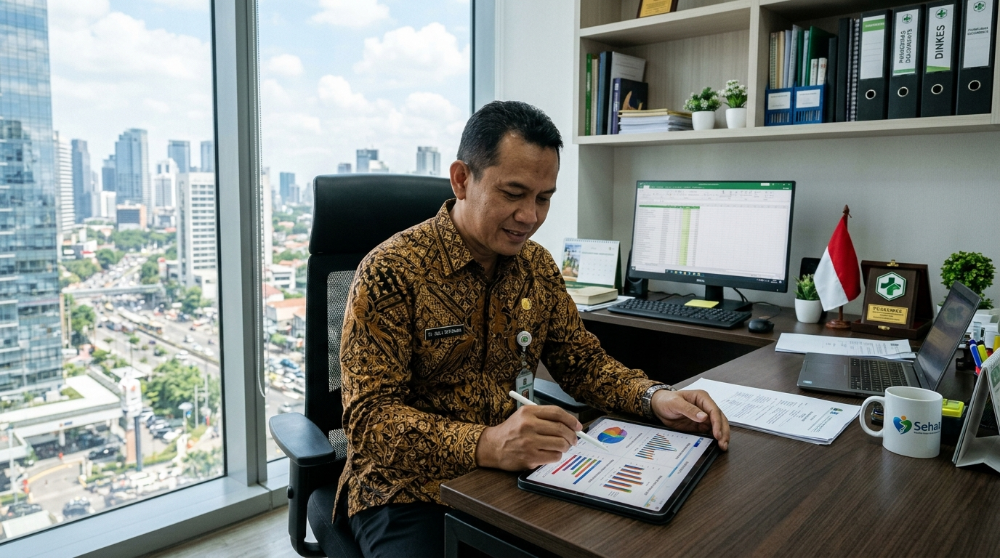
Pemantauan EksekutifRekapitulasi bulanan, capaian SPM, dan SKDR terbit otomatis untuk pemantauan Dinkes wilayah.
Jejaring Daerah Terhubung
Dari ujung barat hingga timur Nusantara, puluhan Dinas Kesehatan Kabupaten/Kota telah mempercayakan tata kelola data faskes, integrasi ILP, dan monitoring wilayahnya melalui ekosistem SIMPUS Nusantara.
Provinsi Aceh
Provinsi Sumatera Utara
Provinsi Lampung
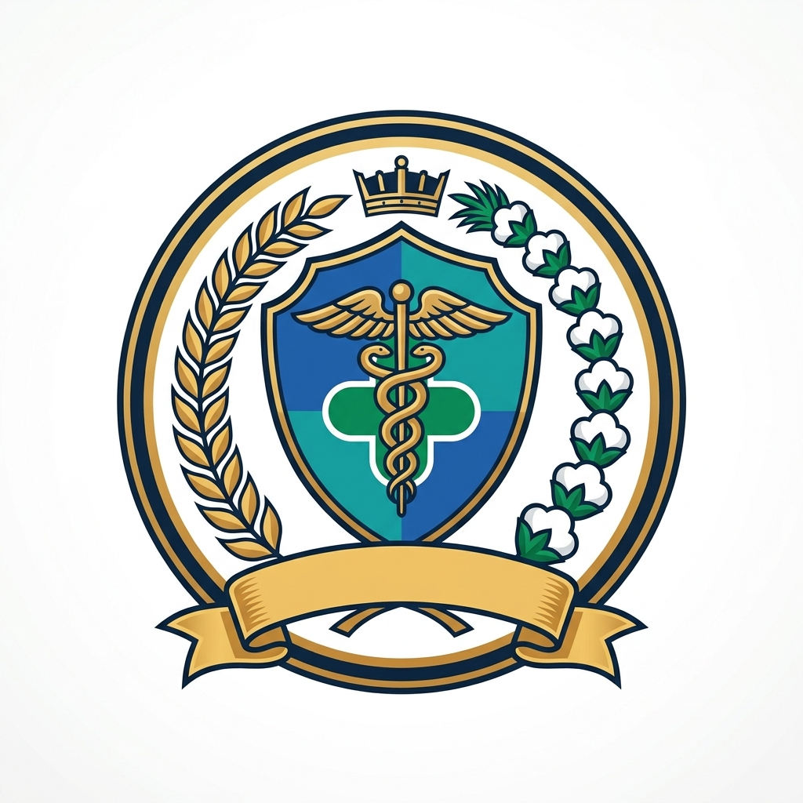
Terhubung AktifProvinsi Jawa Barat
Provinsi Jawa Tengah
Provinsi Jawa Timur
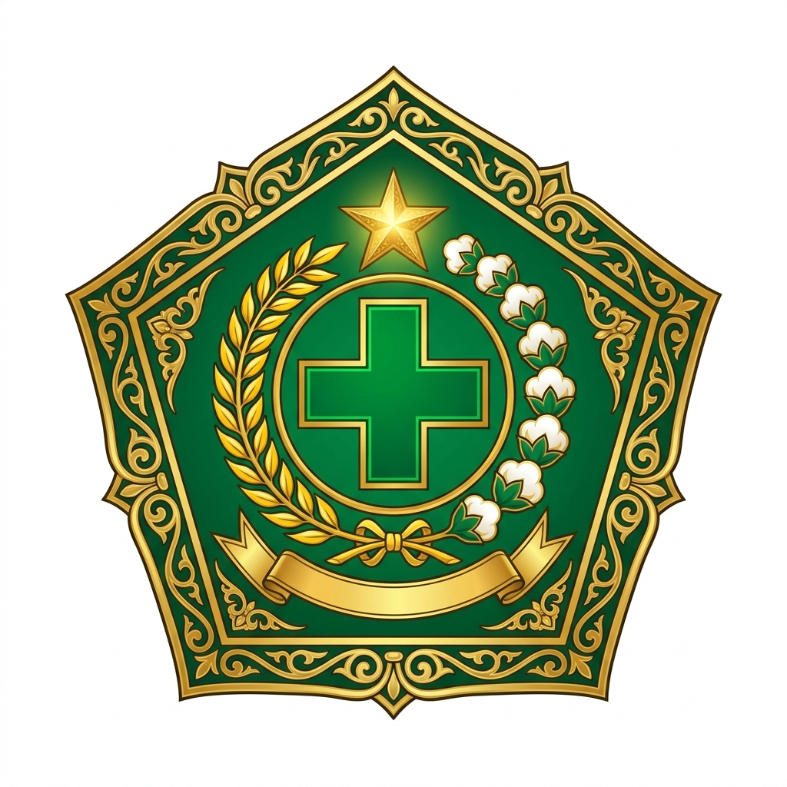
Terhubung AktifProvinsi Kalimantan Timur
Provinsi Kalimantan Barat
Provinsi Sulawesi Selatan
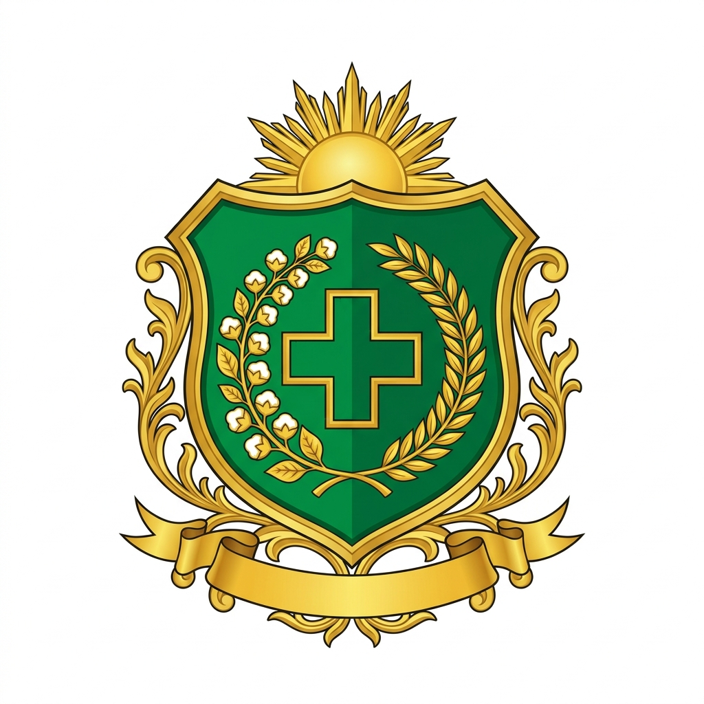
Terhubung AktifProvinsi Nusa Tenggara Barat
Provinsi Maluku Utara
Provinsi Papua Selatan
Dapatkan pendampingan implementasi langsung, kesiapan integrasi SPBE, serta demo monitoring wilayah untuk pimpinan faskes di daerah Anda.
Model Kolaborasi Komunitas
Kami percaya sistem terbaik lahir dari kerja bersama para penggunanya. Di SIMPUS Nusantara, puskesmas dan Dinkes berkolaborasi menentukan arah pembaruan sistem, saling berbagi cara kerja terbaik, dan menikmati transparansi penuh demi kemajuan layanan kesehatan bersama.
Setiap perwakilan Dinkes memiliki hak suara. Kebutuhan operasional lapangan dimusyawarahkan berkala untuk menentukan prioritas rilis sistem.
Dinkes dan puskesmas didampingi tim teknis berdedikasi: mulai dari migrasi data lama, pelatihan nakes, hingga pendampingan kendala lapangan.
Forum sharing berkala antar-Dinas Kesehatan dan puskesmas untuk saling menularkan kisah sukses, adaptasi SOP, dan kepatuhan regulasi Kemenkes.
Perubahan standar Kemenkes atau bridging BPJS langsung diperbarui secara terpusat dan otomatis untuk seluruh pengguna.
Tantangan teknis di satu daerah sering kali sudah berhasil dipecahkan di daerah lain. Melalui wadah kolaborasi ini, Dinkes dan puskesmas tidak perlu meraba-raba sendirian dalam menjalankan amanat Permenkes maupun juknis BPJS terbaru.
Cara puskesmas menata alur layanan siklus hidup terpadu tanpa menambah antrean dan tanpa membuat nakes kewalahan di lapangan.
Strategi Dinas Kesehatan mengawasi log bridging SATUSEHAT dan deteksi dini risiko KLB di seluruh puskesmas binaan dalam satu layar.
Metode pelayanan nakes mendata skrining lansia & imunisasi balita tanpa internet, dengan sinkronisasi instan setiba di puskesmas induk.
Langkah integrasi antrean Mobile JKN dan PCare sehingga waktu tunggu terpangkas drastis dan proses klaim lancar tanpa kendala.
Cara bergabung
Kami pelajari cara kerja puskesmas di daerah Anda dan menunjukkan aplikasinya.
Disediakan sebagai langganan layanan resmi sesuai tata kelola pengadaan instansi pemerintah.
Data lama dipindahkan aman, petugas dilatih sampai lancar memakai.
Wakil Dinkes Anda bergabung di forum dan ikut memilih arah pengembangan.
Komite Pengarah & Tim Inisiator
Inisiatif SIMPUS Nusantara dikawal secara serius dan profesional oleh gabungan dokter layanan primer, pakar rekam medis elektronik, konsultan regulasi, dan praktisi teknologi kesehatan untuk menjamin kesinambungan serta mutu implementasi di seluruh faskes.
Ketua Dewan Pengarah & Praktisi Kedokteran Komunitas
Dokter spesialis kedokteran keluarga layanan primer, berpengalaman 16+ tahun mendampingi transformasi Integrasi Layanan Primer (ILP) dan akreditasi puskesmas di berbagai daerah Indonesia.
Koordinator Arsitektur Sistem & Interoperabilitas
Praktisi rekayasa perangkat lunak kesehatan spesialis bridging SATUSEHAT FHIR Kemenkes RI, integrasi BPJS PCare v4, serta infrastruktur hybrid cloud offline-first untuk puskesmas pelosok.
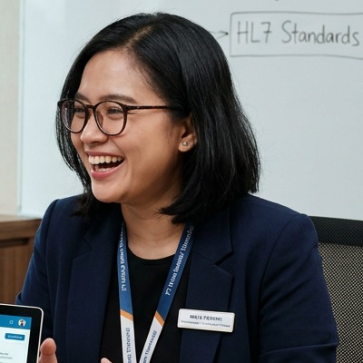
Regulasi & MutuPembina Tata Kelola Regulasi & Kepatuhan SPM
Konsultan manajemen administrasi faskes primer, fokus pada keselarasan regulasi Permenkes No. 24/2022 (RME), kepatuhan SPM Dinas Kesehatan, dan perlindungan privasi data medis.
Koordinator Komunitas & Dukungan Teknis Daerah
Memimpin tim pendampingan teknis implementasi langsung ke puskesmas (on-site & daring), migrasi data historis, serta fasilitator forum berbagi praktik baik antar-daerah se-Nusantara.
Seluruh keputusan pembaruan fitur didiskusikan secara berkala bersama perwakilan Dinas Kesehatan dan dokter kepala puskesmas anggota komunitas demi kepentingan pelayanan publik yang murni dan beretika.
Tanya jawab
SIMPUS Nusantara disediakan melalui skema langganan software-as-a-service (SaaS) yang efisien, legal, dan mematuhi regulasi Sistem Pemerintahan Berbasis Elektronik (SPBE). Pengadaan dapat difasilitasi melalui mekanisme Pengadaan Langsung, belanja operasional BLUD/BOK, maupun e-Katalog LKPP. Tim kami siap mendampingi penyusunan dokumen Kerangka Acuan Kerja (KAK) dan spesifikasi teknis.
Sudah 100%. SIMPUS Nusantara memenuhi seluruh variabel data rekam medis standar Kementerian Kesehatan RI, terhubung langsung dengan platform SATUSEHAT, serta terintegrasi penuh dengan bridging sistem PCare BPJS Kesehatan.
Bisa. Layarnya dibuat sederhana dan sesuai urutan kerja di puskesmas. Setiap puskesmas mendapat pelatihan langsung sampai seluruh petugas lancar memakai dalam pelayanan harian.
Kemitraan dilakukan melalui skema langganan layanan resmi yang sesuai regulasi pengadaan pemerintah daerah. Seluruh puskesmas di bawah naungan Dinkes langsung mendapatkan hak pembaruan sistem berkala, akses forum sharing praktik baik regulasi antar-Dinkes, serta partisipasi aktif dalam musyawarah roadmap pengembangan.
Aplikasi yang Anda pakai tetap sama dan terus dikembangkan. KlikSIMPUS kini berkolaborasi dalam gerakan SIMPUS Nusantara. Yang bertambah: hak ikut menentukan prioritas fitur baru, akses jejaring berbagi praktik baik implementasi antar-puskesmas se-Indonesia, dan jaminan pembaruan kepatuhan regulasi secara berkelanjutan.
Tim teknis kami membantu memindahkan riwayat data pasien dan rekam medis sebelumnya secara aman, lalu memastikan kelancaran bridging ke BPJS dan SATUSEHAT sebelum sistem diluncurkan secara penuh.
Bisa. Pelayanan medis tetap berjalan normal tanpa gangguan saat offline, dan seluruh data akan terkirim otomatis begitu perangkat mendeteksi sinyal kembali.
Supaya mutu, kepatuhan regulasi, dan keamanan data pasien tetap terjamin oleh tim pengembang profesional yang bertanggung jawab. Sebagai gantinya, keputusan roadmap pengembangan dan repositori praktik baik dibuka secara transparan untuk anggota, serta kode dititipkan ke pihak ketiga (software escrow) sebagai garansi keberlanjutan sistem.
Gerakan Bersama Layanan Kesehatan
Waktunya puskesmas di daerah Anda terbebas dari kendala input berulang, siap bridging resmi SATUSEHAT & BPJS, dan tumbuh bersama jejaring ratusan faskes se-Indonesia dalam tata kelola pelayanan yang lebih prima.
Otomasi bridging SATUSEHAT Kemenkes & BPJS PCare tanpa input ganda, tangguh melayani tanpa kendala sinyal, dan alur kluster ILP yang rapi.
Akses repositori SOP teruji, panduan kepatuhan SPM, kisah sukses akreditasi, dan forum rembuk arah pengembangan antar-daerah.
Migrasi data rekam medis lama dibantu aman, pelatihan seluruh nakes sampai mahir, dan demo interaktif gratis tanpa ikatan.